macOS
macOS 13 Ventura or later.

An open-source Arc alternative, built on Chromium: a sidebar of spaces, pinned tabs and folders, and sync that never needs an account.
macOS 13 Ventura or later.
Windows 10 or 11, 64-bit.
64-bit (x64), as a tarball or a Flatpak. No automatic updates yet: download new versions from here.
iPhone and iPad, through Apple's TestFlight app.
Android phones and tablets.
Separate sets of tabs for work, home and everything else, each with its own colors, in a sidebar.
Keep the sites you live in pinned, nested in folders, and come back to them as you left them.
Two tabs side by side in one window.
Pair devices with a short code. Everything is encrypted on your devices; the server can't read it.
The web as Chrome sees it, with its extensions, and automatic updates.
The browser and the sync server, which you can also run yourself.
Compass is a personal project, built mostly with AI coding tools, with me directing and reviewing the work. I share it in case it's useful to you too, but it comes with no guarantee: it may have bugs, break after an update, or stop being maintained. Use it at your own risk.
No accounts. A random 128-bit seed, shared by your devices, gives each one an Ed25519 key for the server and the passphrase for Chromium's sync encryption, applied on the device before upload. The server sees data types, sizes, times and the device list, but not the content. Devices pair with a 6-digit code through SPAKE2; the code never reaches the server. Recovery: 12 BIP39 words. Full design.